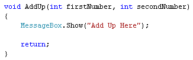
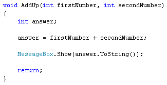
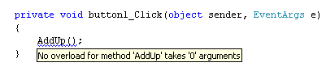
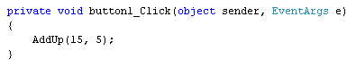
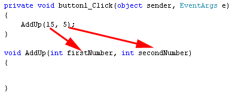
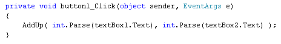

Passing values to your C# Methods
<< Continues from the previous lesson
You can hand values over to your Methods. The Method can then use these values in its code. For us, we want to get two numbers from the text boxes, and then add them up. The two values from the text boxes, then, need to be handed over to our Method. The code to add up will go between the curly brackets of the AddUp Method.
To hand values over to your Methods, you place them between the round brackets. These are called parameters. (You'll also hear the term arguments, often used to mean the same thing. There is a subtle difference, however, which you'll see shortly. It's not crucial that you learn the difference, though!)
Change your Method to this:

So we've added two parameters between the round brackets of AddUp. A parameter is set up just like an ordinary variable. You start with the variable type (int, string, bool, etc.) then a space. After the space, you need to come up with a name for your parameter. We've called our first parameter firstNumber. But we could have called it almost anything. If you want more than one parameter, you separate them with commas. We've added a second parameter and called it secondNumber. Both parameters have been set up as type int. They're going to hold numbers, in other words.
We can use these parameters in the code for the Method. Adapt your AddUp code so that it's like ours below:

So we've set up a new int variable called answer. We're then adding up the variables firstNumber and secondNumber. The result goes in the new variable. The message box displays what is in the variable called answer.
If you try to run your code now, however, you'll get an error. There will be a wavy blue line under AddUp, along with a strange error message:

This error message can be translated as "You have no Method called AddUp that takes zero arguments." When you're calling a Method into action, you need to use the same number of parameters (now called arguments instead) as when you set it up. We set up our Method to take two values, firstNumber and secondNumber. So we need to use two values when we call the Method.
Here's the difference between an argument and a parameter: It's a parameter when you set up the values in the method; It's an argument when you're calling it (passing the values to the Method).
Change your button code to this:

So we've now typed two number between the round brackets, 15 and 5. The first value you type will get handed to parameter one of your Method, the second value will get handed to parameter two, and so on. The picture below might clear things up, if all of that is a little confusing:

So the Method itself has two parameters. When it is being called in the button code there are now two arguments, once for each parameter.
Run your programme again and there shouldn't be any errors. When you click your button, you should see the answer to the addition.
Halt your programme, and change your button code to this:

Now, the values between the round brackets are no longer numbers that we've just typed in there. Instead, we're getting the values from the text boxes, and placing them between the round brackets. Note the comma separating the two values.
You can also do this:
We're now putting the values from the text boxes into two new variables, called number1 and number2. When we call the Method, we can use these variable names:
AddUp( number1, number2 );
The values in these two variables will get handed to our Method. But all you are trying to do is to pass two integers over to your Method. You need two integers because that's the way you set the Method up.
One more thing to note, here. When we set the Method up, the two parameters were called firstNumber and secondNumber. When we called it from the button, however, the two variables are called number1 and number2. So we've used different variables names. This is perfectly OK, and C# doesn't get confused. All that matters is that you are passing the correct information over to the Method.
You will also want to get values back from your Methods, and you'll see how to do that in the next lesson.